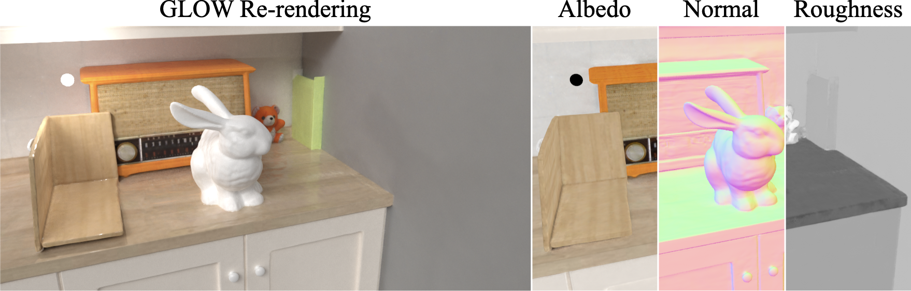

We reconstruct indoor scenes from images captured with a co-located light and camera,
recovering geometry and material properties while accounting for challenging global illumination.
Global Illumination-Aware Inverse Rendering of Indoor Scenes Captured with Dynamic Co-Located Light & Camera

Inverse rendering of indoor scenes remains challenging due to the ambiguity between reflectance and lighting, exacerbated by inter-reflections among multiple objects. While natural illumination-based methods struggle to resolve this ambiguity, co-located light-camera setups offer better disentanglement as lighting can be easily calibrated via Structure-from-Motion. However, such setups introduce additional complexities like strong inter-reflections, dynamic shadows, near-field lighting, and moving specular highlights, which existing approaches fail to handle. We present GLOW, a Global Illumination-aware Inverse Rendering framework designed to address these challenges.